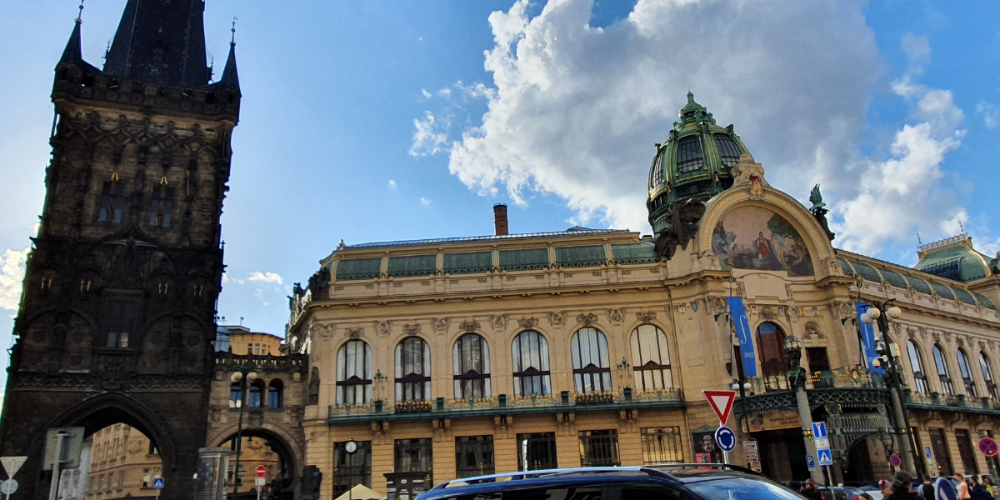
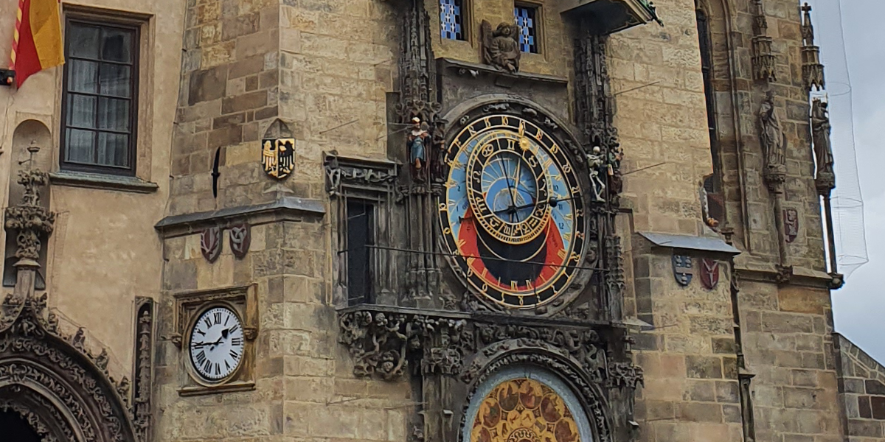
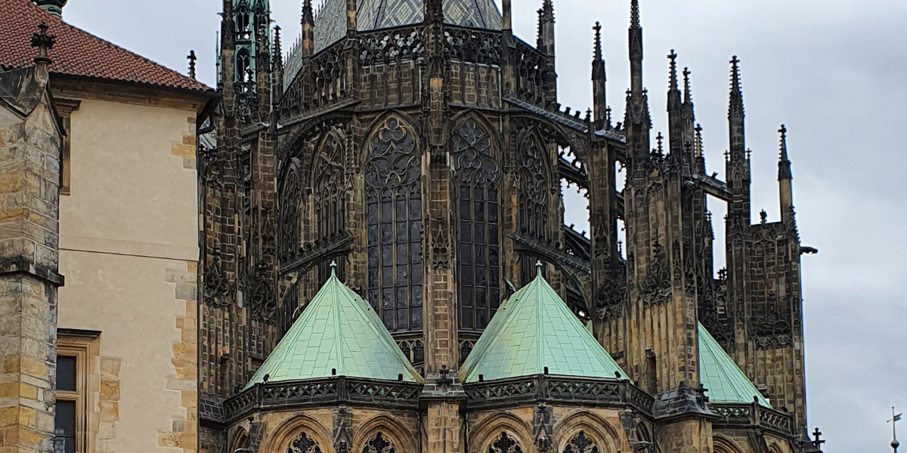

PRAAG
- 
POWDER TOWER
De eerste dag in Praag gingen we op onderzoek uit! Na een tijdje rond te hebben gelopen, kwamen we uit bij deze toren, vlak naast een enorm winkelcentrum. Een eetpauze en wat winkelen later, besloten we de zogenaamde polvertoren ook echt te bezoeken. De toren is gebouwd in 1475, en was in de 17e eeuw een plaats waar buskruit werd opgeslagen. Ook is het de plek waar de 1475 waar buskruit werd opgeslagen in de zeventiende eeuw, waar het ook haar naam van gekregen heeft.
- 
ASTRONOMISCH UURWERK
Op een verstopt plein in de binnenstad, kwamen we dit prachtige uurwerk tegen. De astronomische wijzerplaat, in het midden van de toren, geeft vijf verschillende soorten tijd aan:
1. Hoe laat het op dat moment in Praag is 2. De zogenaamde ongelijke uren. Deze worden op een 12-uur basis gemeten, zonsopgang tot zonsondergang, en zijn dus niet elke dag hetzelfde. 3. De Boheemse of Italiaanse uren, die in 24 uur de tijd aangeven. 4. De plaats van de zon in de zodiak of dierenriem 5. De sterrentijd.
- 
SINT-VITUSKATHEDRAAL
De laatste dag in Praag besloten we om de Praagse burcht te bezoeken. In het midden hiervan ligt de Sint-Vituskathedraal. Het kostte nogal wat moeite om een ticket te scoren, maar uiteindelijk mochten we toch naar binnen! Binnen in de kerk zag alles er sierlijk uit, wat past bij de gotishce stijl van de buitenkant. Ook de laatste dag in Praag eindigde als een groot succes, en we pakten het vliegtuig terug naar Nederland.